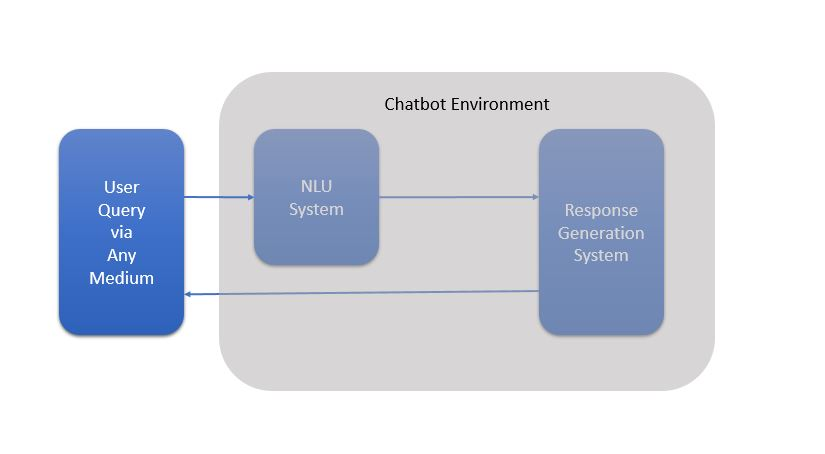

Building Your own Chatbot with Rasa
Posted on Oct 06, 2017 at 09:00 AM

Chatbots are computer programs that we interact with via text or voice interface. Today's chatbot are more intelligent with use of AI models in the backend. You can read more here.
A basic chatbot architecture consists of two main components, nlu and a response system.
In this blog we will look to build terminal based chatbot real quick using rasa framework.
Rasa is an opensource framework which enables one to build chatbot in their own environment with minimal effort. You can learn more about rasa here.
My Github repo for rasa-nlu and rasa-core.
As of writing this blog, rasa-core is in early access mode and access can be requested via rasa website.In this blog we will create a bot which is able to get product information based on name and version of the software, product information could be hardware related or feature related. Bot will fetch these info from postgres database. Bot can also deploy a software to tomcat if asked.
Install rasa-nlu using below command
sudo pip install rasa_nlu
Rasa NLU comes with following implementations of models,
- spaCy + sklearn
- MITIE
- sklearn + MITIE
We will be using spaCy_sklearn for NLU. Read more about spaCy here and about sklearn here.
We start by creating configuration file that tells the rasa nlu framework which model we want to use, what is the path to store the model created and where to find the training dataset.
file name: "config_spacy.json"
{
"pipeline": "spacy_sklearn",
"path" : "./models",
"data" : "./data/sample-dataset.json"
}
Next, we need to prepare the dataset. Dataset format accepted by rasa-nlu framework is as follows,
{
"text": "what all features are available in awk 6.0?" ,
"intent":"product_information",
"entities": [
{
"start":9,
"end":17,
"value":"feature",
"entity":"whatisrequired"
},
{
"start":35,
"end":38,
"value":"awk",
"entity":"software_name"
},
{
"start":39,
"end":42,
"value":"6.0",
"entity":"software_version"
}
]
}
Here, we have entities {whatisrequired,software_name,software_version} and intent is product_information.
It is important that we provide enough examples with different variations of the statements so that model is able to generalize well. Incase we dont have enough examples of real data, then we can create data with dummy data, like resturant name,locations can be dummy.
Once we have acceptable amount of training data it is time to train.
Training the model with below command,
python -m rasa_nlu.train -c ./config_spacy.json
While the model is being trained, you will see outputs similar to these,
INFO:rasa_nlu.utils.spacy_utils:Trying to load spacy model with name 'en'
INFO:rasa_nlu.components:Added 'nlp_spacy' to component cache. Key 'nlp_spacy-en'.
INFO:rasa_nlu.converters:Training data format at ./data/demo-rasa.json is rasa_nlu
INFO:rasa_nlu.training_data:Training data stats:
- intent examples: 42 (4 distinct intents)
- found intents: 'affirm', 'goodbye', 'greet', 'restaurant_search'
- entity examples: 11 (2 distinct entities)
- found entities: 'cuisine', 'location'
INFO:rasa_nlu.model:Starting to train component nlp_spacy
INFO:rasa_nlu.model:Finished training component.
INFO:rasa_nlu.model:Starting to train component tokenizer_spacy
INFO:rasa_nlu.model:Finished training component.
INFO:rasa_nlu.model:Starting to train component intent_featurizer_spacy
INFO:rasa_nlu.model:Finished training component.
INFO:rasa_nlu.model:Starting to train component intent_entity_featurizer_regex
INFO:rasa_nlu.model:Finished training component.
INFO:rasa_nlu.model:Starting to train component ner_crf
INFO:rasa_nlu.model:Finished training component.
INFO:rasa_nlu.model:Starting to train component ner_synonyms
INFO:rasa_nlu.model:Finished training component.
INFO:rasa_nlu.model:Starting to train component intent_classifier_sklearn
Fitting 2 folds for each of 6 candidates, totalling 12 fits
[Parallel(n_jobs=1)]: Done 12 out of 12 | elapsed: 0.1s finished
Here you can see that it has picked up the intents and entity correctly and summarizes all the details before starting with the training process.
Thats it!, our NLU model is trained, a new directory is created under models folder.
Now, we need to prepare the response generation part.
In a simple chatbot, implementating a response generation system can be a lookup against intent and entity in a database, but we want to put some kind of intelligence to it so we will use rasa-core.
Rasa-core provides intelligence by using machine learning model for predicting next action to take based on intent, entity and past ongoing conversation. Rasa-core serialises these into tracker object and passes it as features to the model to predict next action. Ofcourse before model could predict, we need to train it with dataset.
Once you have the access to rasa-core github, start by installing rasa-core with below command,
git clone https://github.com/RasaHQ/rasa_dm.git
cd rasa_dm
pip install -r requirements.txt
pip install -e .
The first step in rasa-core is to create domain.yml file, for our bot domain file will look like this,
- Domain file defines what bot consists of, and what it needs to do and the environment around it. It is needed while training and prediction.
- Slots are for storing information that’s relevant over multiple turns of conversation.
- Intents and Entities will be extracted by rasa-nlu and passed to rasa-core.
- Templates define static messages against actions.
- Actions are basically classes that we define and we can implement any logic within them.
Now it is time to prepare actions.py file, you can refer to code here In the actions.py file I have hardcoded feature and hardware part but it can easily be extended to retreive this information from any external service.
actions.py implements following
- deployment to tomcat
- fetching feautres and hardware requirements
- saves entities to slots
Next comes policies.py,
Policies are model or a simple implementation for selecting what is the best action to take given intent, entity, slots.
Here I have implemented Keras policy, keras is provided inbuilt as library in rasa-core, hence easier to use. There is not much effort put in this policy because predicting action in this implementation of bot is straight forward. In case there is complex requirement then this policy can be extended to use complex models.
Now we have domain.yml,actions.py,policy.py ready.
Next up is preparing stories,
Stories are used to create conversational dialogs or flows that is expected by bot. It is used to train policy model.
Implementation of stories.md can be found here.
Once all these are ready, its now time to train.
To train, we create an agent object.
Agent brings interpreter, policy and domain together.
For training we don't need interpreter, only stories and domain file is needed.Training agent code is defined here.
Once the training is complete, a folder is created within models.
We create another agent instance to use intrepreter and the model and run the bot via terminal. Code for this is here.
Output from above bot implementation
user: hi
bot : hello there
user: hat are the features of WatsonSearch
bot : what is the software version?
user: .0.1
bot : feature for software WatsonSearch version 0.0.1 is DUMMY VARIABLE 1 DUMMY VARIABLE 2
user: an you deploy it please?
bot : what is the source_location?
user: home/cdpai/software_to_deploy
bot : what is the destination_location?
user: tomcat
bot : Missing configuration in 'software' table, no row in software table with name WatsonSearch and version 0.0.1
bot : There are no configurations defined, will try to deploy with information we have
**LOG TRUNCATED**
bot : WatsonSearch/search/vendor.tomcat.bundle.js.gz
Using CATALINA_BASE: /home/cdpai/tomcat/apache-tomcat-8.5.20
Using CATALINA_HOME: /home/cdpai/tomcat/apache-tomcat-8.5.20
Using CATALINA_TMPDIR: /home/cdpai/tomcat/apache-tomcat-8.5.20/temp
Using JRE_HOME: /usr
Using CLASSPATH: /home/cdpai/tomcat/apache-tomcat-8.5.20/bin/bootstrap.jar:/home/cdpai/tomcat/apache-tomcat-8.5.20/bin/tomcat-juli.jar
Using CATALINA_BASE: /home/cdpai/tomcat/apache-tomcat-8.5.20
Using CATALINA_HOME: /home/cdpai/tomcat/apache-tomcat-8.5.20
Using CATALINA_TMPDIR: /home/cdpai/tomcat/apache-tomcat-8.5.20/temp
Using JRE_HOME: /usr
Using CLASSPATH: /home/cdpai/tomcat/apache-tomcat-8.5.20/bin/bootstrap.jar:/home/cdpai/tomcat/apache-tomcat-8.5.20/bin/tomcat-juli.jar
Tomcat started.
bot : Deployment status (True, 'Deployment successful')